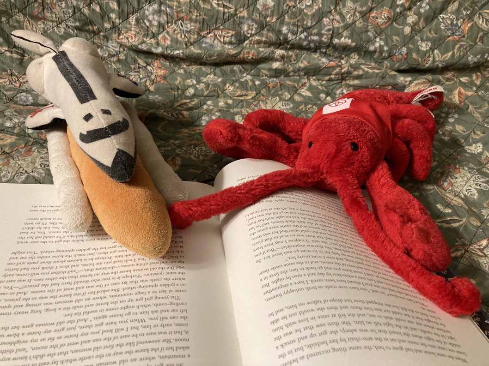
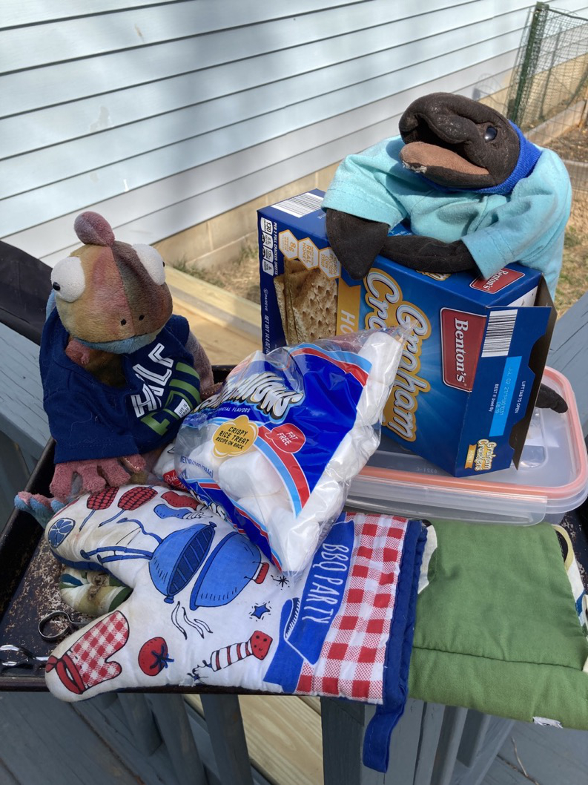
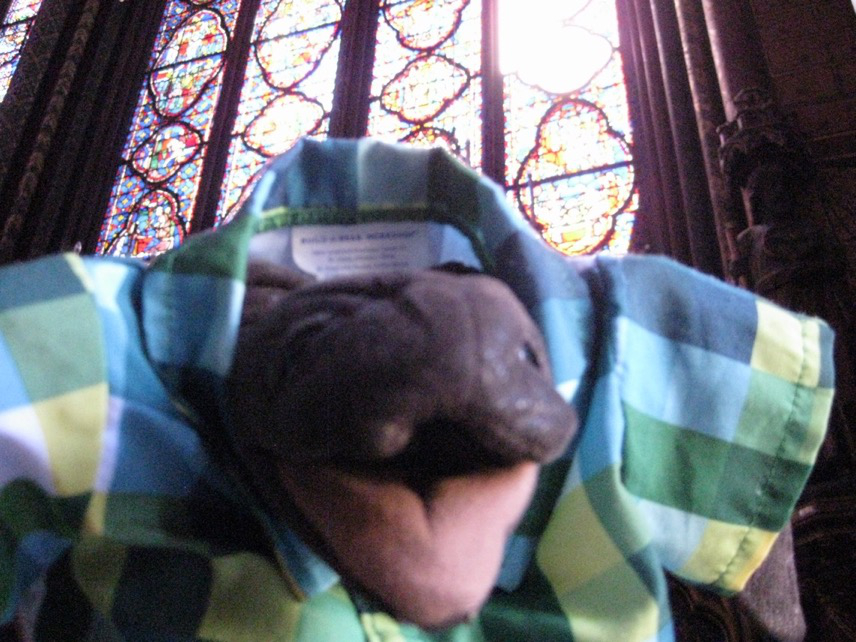

Me getting ready to record an Asom Disco Beet!Me enjoying a delicious flowerMe listening to some Asom Disco BeetsMe with my trusty iBook G4Me getting ready for a yummy midday snackEmerald practicing the day away on her pianoChocolate Crinkle performing repairs on her favorite 17-inch MacBook Pro 2010
Leica and Shorty getting ready for a close match on Forza Horizon 4Emerald giving Moby and Kebab a violin lessonSnappy and UV Ray arguing over the Nintendo 3DS

Boing and Brick enjoying a book togetherDusty working hard sitting on his 1984 Macintosh, MaxMe and Paco chilling out on a snowy day with only their sweaters to keep them warm

Me and Paco preparing to make s'mores!
Me and Paco proud of their mega-skewer of marshmallowsMe and Paco getting ready to eat a delicious s'more!)Me and Paco enjoying some snow in April after the flowers bloomedI made a new friend, Madeline the Golden puppy!Me eating a delicious macaron in France

Me in Notre Dame cathedral in FranceMe seeing the Mona Lisa!
Don't forget to check back again frequently; there is always more to come! Also follow me on Instagram @jellymanawesome for the latest pictures of me and my friends!